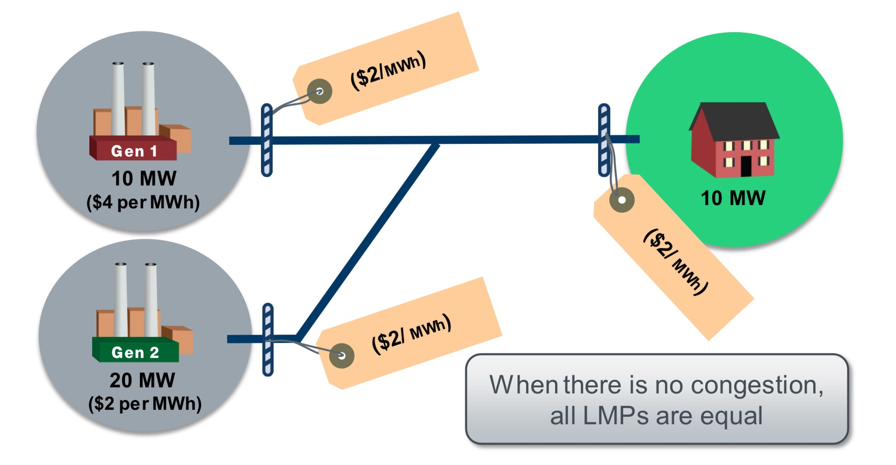
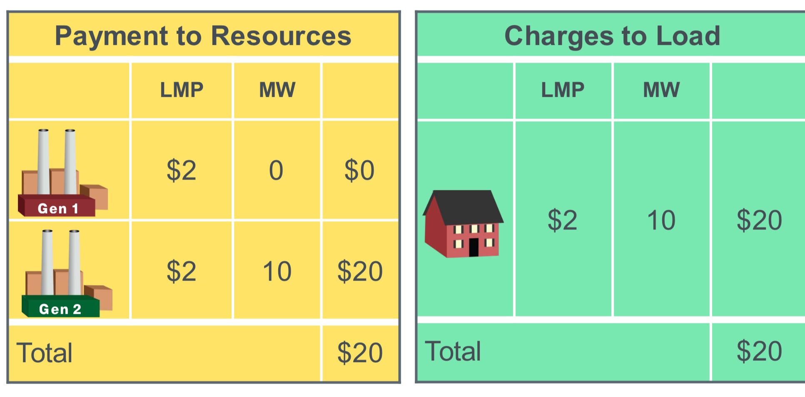
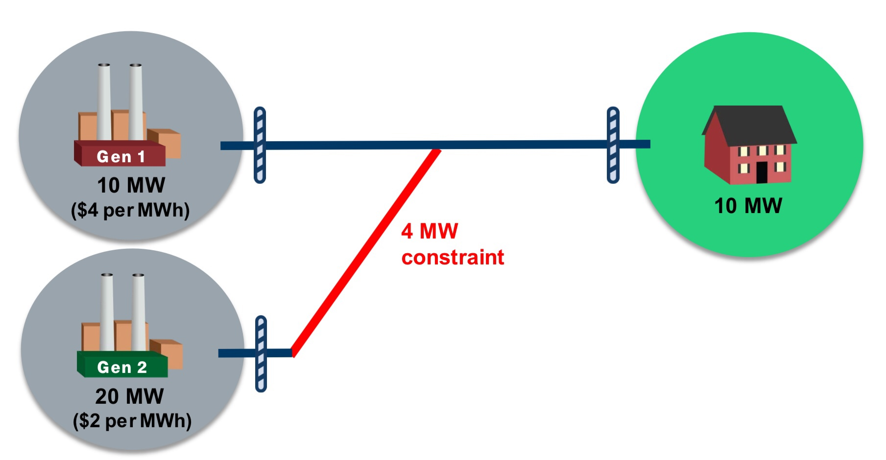
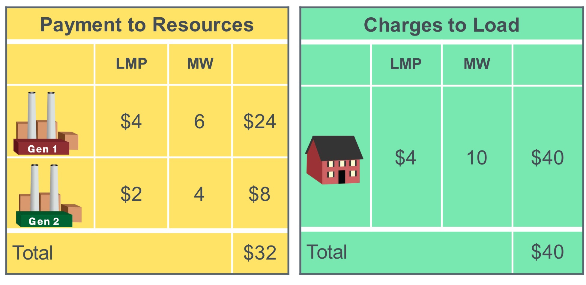

Graph Databases :
Graph databases are NoSQL databases which use the graph data model comprised of vertices, which is an entity such as a person, place, object or relevant piece of data and edges, which represent the relationship between two nodes.
Graph databases are particularly helpful because they highlight the links and relationships between relevant data similarly to how we do so ourselves.
this is an example of a graph :

In the graph data model above we can see the common entities: User, Movie, Genre
the common relationships are: Rates, Follows, Has
Modeling Local Marginal Prices (LMPs) and Congestion Revenue Rights (CRR) :
What are LMPs?
LMPs represents the cost to buy and sell power at different locations within wholesale electricity markets, usually called Independent System Operators (ISOs). Examples of ISOs include ERCOT, PJM, ISONE, MISO, CAISO, and NYISO. LMPs are made up of three components, Energy Price, Congestion Cost, and Losses. Most ISOs have Day Ahead and Real Time LMPs. Day-ahead LMPs represent prices in day-ahead markets which let market participants buy and sell wholesale electricity a day before the operating day to avoid volatility. Real-time LMPs represent prices in real time markets which let participants buy and sell power during the day of operation. As a simplified example, let’s say you lived in a neighborhood and at noon today you expected you would have 100 MWs of electricity demand. Yesterday you would have bought 100 MWs of electricity to be delivered at 12 today on the day-ahead market. However when 12 today rolls around, demand is actually 105 MWs, you would buy the additional 5 MWs on the real-time market. Real-time market prices are generally more volatile than day-ahead market prices.
Example
Without congestion

This is a simplified scenario where we have 2 generators and one consumer, first generators make a 10MW for the price of $4 per MWh, the second makes 20 MW for the price of $2 per MWh, the lines able to transmit 10MW to consumer premises.
no congestion exists and Generator 2 has the lowest offer and can serve the entire load. Since LMP is calculated as the cost of the next MW needed and generator 2 can supply the next MW at $2, the LMP is $2/MWh. Because there’s no congestion on the network, the cheaper LMP of $2/MWh applies to all the nodes, and the 10 MW load costs $20.
In this case, the LMP will be $2/MWh and the payments/charges would look something like this :

As we can see generator 2 was able to provide the entirety of the power needed, and LMP is $2 in all three buses ( without accounting for line losses ).
With Congestion:
In the next scenario we will introduce the concept of congestion:

The power line from Generator2 has a limit of 4 MW, meaning that maximum power that generator 2 can put on the grid is 4MW, the remaining ( 6MW ) that the consumer needs will be provided by Generator1, this will influence the LMPs in all three buses

congestion exists and Generator 2 is not fully utilized; there’s a constraint from Generator 2 and it can only serve 4 MWs. Now using MWs from the lowest priced generator cannot serve the entire load; 6 MWs must come from elsewhere, such as Generator 1.
The LMP at Generator 2 is still $2/MWh, so for the 4MWs it supplies, $8 will be paid to Generator 2. Generator 1 will supply 6 MW at $4/MWh, so it should receive a payment of $24. Because congestion exists between Generator 2 and the load, the two LMPs are different, and the more expensive generation cost of $4/MWh is used when charging the load for the 10MW; $40 is owed for the 10 MWs it used for an hour.
In this the following example I have tried to model both scenarios we showed in the example above.
There is 3 type of nodes:
Generator: a generation resource in the grid, it can be a power plant, wind or solar farm.
Consumer: a consumer entity ( residential, commercial …)
Connection: represent a connection between power lines on the grid
The relationships basically represent the capacity of the transmission line, in this case, 4MW and 10MW
Here is a link to the java code on GitHub

We are using Spring Boot as an application framework, the nodes from the previous example are used as classes.
to compile the application and generate the binaries :

Starting the application :

in this example we have a Neo4j server running locally if you go to http://localhost:7474
you will be able to see the graph :

in the graph, we can see all the nodes and relationships that was generated :
Generators, Connections, and Customers
if we look at the node properties :